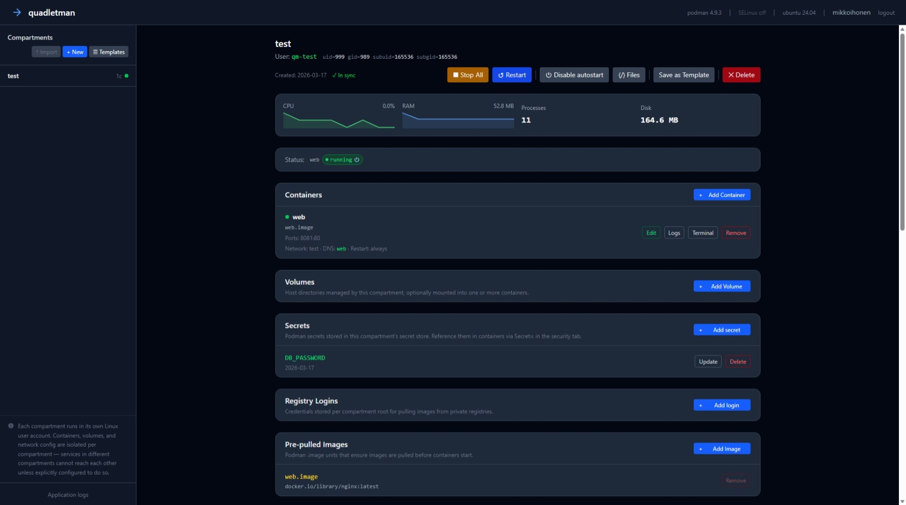

quadletman¶


quadletman is a browser-based admin UI for running Podman containers on a headless Linux server. Instead of talking to the Podman socket at runtime, it generates and manages Quadlet unit files — the systemd-native way to declare containers as persistent services. Each group of containers lives in a compartment: an isolated environment backed by a dedicated Linux system user, its own volume storage, and its own Podman secret and registry-credential store.
You point a browser at the server, log in with your existing OS credentials, and get a full lifecycle UI: create compartments, define containers and pods, manage volumes and secrets, schedule timers, watch live logs, and monitor resource usage. All without touching the command line.

See docs/features.md for a full feature breakdown.
⚠ Beta software — not for production use.
quadletman is in development and is not suitable for production use.
It is provided here for evaluation purposes
Comparison with Similar Tools¶
quadletman targets a specific gap: a headless server-side web UI that manages containers at the systemd unit file level rather than via the Podman socket API.
| Tool | Interface | Creates/edits Quadlet unit files | Per-service OS user isolation | Server-side web UI |
|---|---|---|---|---|
| quadletman | Web (HTMX) | Yes | Yes | Yes |
| cockpit-podman | Web (Cockpit) | No — shows running containers only | No | Yes |
| Podman Desktop | Desktop app (Electron) | Yes (via extension) | No | No |
| Portainer | Web | No | No | Yes |
| Dockge | Web | No — Docker Compose only | No | Yes |
| podman-tui | Terminal (TUI) | No | No | No |
cockpit-podman is the closest server-side alternative. It shows Podman containers (including ones already started by Quadlet units) but does not create or edit unit files, manage system users, or handle volumes with SELinux labels. It is a read/run UI, not a provisioning tool.
Podman Desktop is the only other tool that actually generates and edits Quadlet unit files through a form interface, but it is a developer desktop application requiring an installed GUI environment — not a tool for administering a headless Linux server remotely.
Portainer and Dockge are Docker-centric and treat Podman as a drop-in Docker socket replacement. Neither has any concept of Quadlet unit files, systemd user services, or per-service Linux user isolation.
quadletman's distinctive combination — generating Quadlet unit files, running each service group under its own isolated Linux user, managing host volumes with SELinux contexts, and doing all of this from a browser against a headless server — is not covered by any existing tool.
Requirements¶
- Linux on x86_64 or ARM64 (aarch64)
- Python 3.12+
- Podman with Quadlet support (Podman 4.4+; see docs/governance.md for the full supported-versions table)
- systemd (with
loginctlandmachinectl) - Linux PAM development headers (
pam-devel/libpam0g-dev) - Optional: SELinux tools (
policycoreutils-python-utils) for context management - Optional:
keyutilsfor kernel keyring credential isolation (credentials stored in kernel memory instead of process memory; auto-detected at startup)
Installation¶
From the package repository (recommended)¶
Pre-built packages are available from the package repository. Follow the install instructions on the landing page for your distribution.
Build from source¶
Fedora / RHEL / AlmaLinux / Rocky Linux (RPM):
Ubuntu / Debian (DEB):
Generic (any systemd Linux):
See docs/packaging.md for build prerequisites, how packages are structured, upgrade instructions, and smoke-test VM setup. See docs/runbook.md for first-time setup, configuration, and day-to-day operations.
With the default configuration, the web UI will be available at http://<host>:8080.
Configuration¶
See docs/runbook.md — Configuration for all
QUADLETMAN_* environment variables and how to set them via /etc/quadletman/quadletman.env.
Further Reading¶
| Document | Contents |
|---|---|
| docs/runbook.md | Post-install setup, configuration, day-to-day operations, troubleshooting, upgrade, and uninstall |
| docs/features.md | Full feature breakdown — compartments, containers, volumes, scheduling, monitoring, process and connection monitors |
| docs/architecture.md | Compartment roots, helper users, UID/GID mapping, Quadlet files, volumes |
| docs/development.md | Dev setup, running locally, WSL2 (incl. connection monitor limitations), contributing, migrations |
| docs/packaging.md | Build prerequisites, package structure, upgrade instructions, smoke-test VMs |
| docs/testing.md | Unit/integration tests |
| docs/ways-of-working.md | Branch strategy, PR process, CI pipeline, versioning scheme, release process |
| docs/ui-development.md | UI state management, Alpine/HTMX patterns, macros, button styles, modals |
| docs/localization.md | Localization workflow, Finnish vocabulary, adding new languages |
| docs/governance.md | Upstream Podman alignment, VersionSpan model, release monitoring, supported versions |
| docs/upstream_monitoring.md | Podman release monitor workflow and feature-check script |
| CLAUDE.md | AI/contributor conventions — code patterns, security checklist, version gating |
Security Notes¶
NOTE! This is a side project of a single independent developer.
Bug reports are appreciated, but no reaction or fix times can be given. Use on your own risk.
For security details, see: SECURITY
Network exposure¶
quadletman runs as a dedicated quadletman system user and should never be exposed directly to the internet.
Two recommended deployment patterns:
Reverse proxy with HTTPS — put quadletman behind nginx or Caddy, terminate TLS
at the proxy, and set QUADLETMAN_SECURE_COOKIES=true:
Unix socket over SSH tunnel — bind quadletman to a Unix socket instead of a TCP port and access it through an SSH tunnel. This avoids opening any network port:
# Server: /etc/quadletman/quadletman.env
QUADLETMAN_UNIX_SOCKET=/run/quadletman/quadletman.sock
# Client: forward local port to the remote socket
ssh -L 8080:/run/quadletman/quadletman.sock user@server
# Then open http://localhost:8080 in a browser
When QUADLETMAN_UNIX_SOCKET is set, the host and port settings are ignored.
This is the most restrictive option — no TCP listener exists on the server at all.
Authentication and sessions¶
- Authentication uses the host's PAM stack — no separate user database
- Session credentials for privilege escalation are stored in the Linux kernel keyring
(process-scoped, isolated from application memory) when
libkeyutilsis available; falls back to Fernet-encrypted in-memory storage otherwise - Admin operations escalate via the authenticated user's sudo credentials; monitoring runs via per-user agents without sudo
- Only users in
sudo/wheelgroups are authorized, matching OS admin conventions - Session cookies: HTTPOnly, SameSite=Strict; set
QUADLETMAN_SECURE_COOKIES=truefor the Secure flag (required when serving over HTTPS) QUADLETMAN_TEST_AUTH_USERbypasses PAM entirely — never set this in production; it exists solely for Playwright E2E tests running against a dev server
Request protection¶
- CSRF protection: double-submit cookie pattern — every mutating request must include an
X-CSRF-Tokenheader matching theqm_csrfcookie - Security headers on every response:
X-Frame-Options: DENY,X-Content-Type-Options: nosniff, Content Security Policy,Referrer-Policy: same-origin(HSTS whensecure_cookies=True)
Input validation and host hardening¶
- Container image references and bind-mount paths are validated server-side; sensitive host
directories (
/etc,/proc,/sys, etc.) cannot be bind-mounted into containers - File writes use
O_NOFOLLOWto prevent symlink-swap (TOCTOU) attacks inside volume directories - All user-supplied strings pass through branded-type validation before reaching service functions or the filesystem